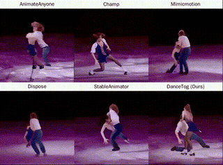
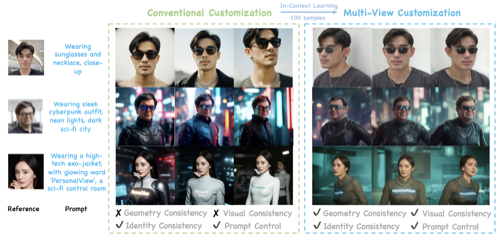
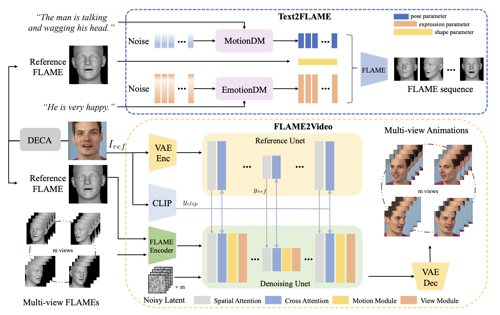
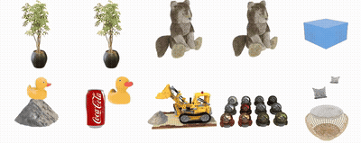
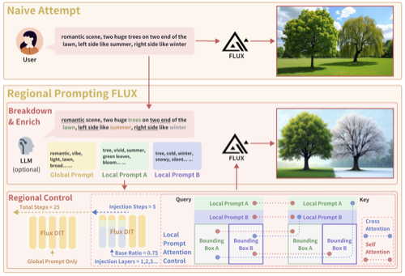
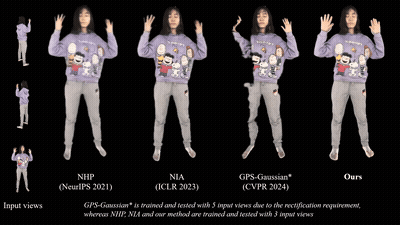

I am a Ph.D. in Robotics student at Carnegie Mellon Univeristy working with Prof. Fernando. Before that, I obtained a master's degree at Columbia University working with Prof. Changxi Zheng, and a bachelor's degree at Tsinghua University working with Prof. Xiaolin Hu. I am also an alumnus of RDFZ graduated on 2015. My research interests include 3D human avatar generation, video diffusion models for humans, generative models, and 3D computer vision. Feel free to reach out to connect or collaborate!
Email: xujj15 at gmail dot com
Publications

DanceTogether! Identity-Preserving Multi-Person Interactive Video Generation
Junhao Chen, Mingjin Chen, Jianjin Xu, Xiang Li, Junting Dong, Mingze Sun, Puhua Jiang, Hongxiang Li, Yuhang Yang, Hao Zhao, Xiaoxiao Long, Ruqi Huang
ICLR 2026
Webpage •
Paper •
Code

Multi-View Consistent Human Image Customization via In-Context Learning
Hengjia Li, Jianjin Xu, Keli Cheng, Lei Wang, Ning Bi, Boxi Wu, Fernando De la Torre, Deng Cai
arXiv 2025
Paper

MVPortrait: Text-Guided Motion and Emotion Control for Multi-view Vivid Portrait Animation
Yukang Lin, Hokit Fung, Jianjin Xu, Zeping Ren, Adela S.M. Lau, Guosheng Yin, Xiu Li
CVPR 2025
Paper

OmniPhysGS: 3D Constitutive Gaussians for General Physics-Based Dynamics Generation
Yuchen Lin, Chenguo Lin, Jianjin Xu, Yadong Mu
ICLR 2025
Webpage •
Paper •
Code

Training-free Regional Prompting for Diffusion Transformers
Anthony Chen, Jianjin Xu, Wenzhao Zheng, Gaole Dai, Yida Wang, Renrui Zhang, Haofan Wang, Shanghang Zhang
arXiv 2024
Paper •
Code

Generalizable Human Gaussians for Sparse View Synthesis
Youngjoong Kwon, Baole Fang, Yixing Lu, Haoye Dong, Cheng Zhang, Francisco Vicente Carrasco, Albert Mosella-Montoro, Jianjin Xu, Shingo Takagi, Daeil Kim, Aayush Prakash
ECCV 2024
Webpage •
Paper •
Code

Personalized Face Inpainting with Diffusion Models by Parallel Visual Attention
Jianjin Xu, Saman Motamed, Praneetha Vaddamanu, Chen Henry Wu, Christian Haene, Jean-Charles Bazin, Fernando de la Torre
WACV 2024
Paper •
Code and Dataset Release

PATMAT: Person Aware Tuning of Mask-Aware Transformer for Face Inpainting
Saman Motamed, Jianjin Xu, Chen Henry Wu, Fernando De la Torre
ICCV 2023
Paper •
Code
 Extracting Semantic Knowledge from GANs with Unsupervised Learning
Extracting Semantic Knowledge from GANs with Unsupervised Learning
Jianjin Xu, Zhaoxiang Zhang, Xiaolin Hu
IEEE Transactions on Pattern Analysis and Machine Intelligence
Webpage •
Paper •
Code
 Linear Semantics in Generative Adversarial Networks
Linear Semantics in Generative Adversarial Networks
Jianjin Xu, Changxi Zheng
International Conference on Computer Vision and Pattern Recognition (CVPR 2021)
Webpage •
Paper •
Code
 Semantic Controllable Image Generation in Few-shot Settings
Semantic Controllable Image Generation in Few-shot Settings
Jianjin Xu, Changxi Zheng
Thesis submitted for Master of Science in Computer Science, Columbia University
Thesis •
Slides
Manuscripts and Projects
 Frame Difference-Based Temporal Loss for Video Stylization
Frame Difference-Based Temporal Loss for Video Stylization
Jianjin Xu, Zheyang Xiong, Xiaolin Hu
Webpage •
Paper •
Code
 Neural Painter: Smart Image Editing with Simple Line Drawings
Neural Painter: Smart Image Editing with Simple Line Drawings
Jianjin Xu, Yuekai Jia, Mingyang Kou, Xiaolin Hu
3rd Prize in Tsinghua University 36th Challenge Cup (清华大学第36届挑战杯三等奖)
Webpage •
Tech Report (Chinese) •
Slide (Chinese) •
Code
 Interactive Editing in Aesthetic Painting
Interactive Editing in Aesthetic Painting
Jianjin Xu, Yan Kong, Cunjun Zhang
Project as a part of Aesthetic Painting Generation System (ACMMM'18)
Webpage
Teaching
- Teaching Assistant: Carnegie Mellon University 16-822 Geometry-based Methods in Vision, Fall 2024 & 2025
- Teaching Assistant: Columbia University COMS-W4995 Special Topics In Computer Science, I: Causal Inference, 2020
This webpage is inspired by Prof. Shuran's beautiful home page.